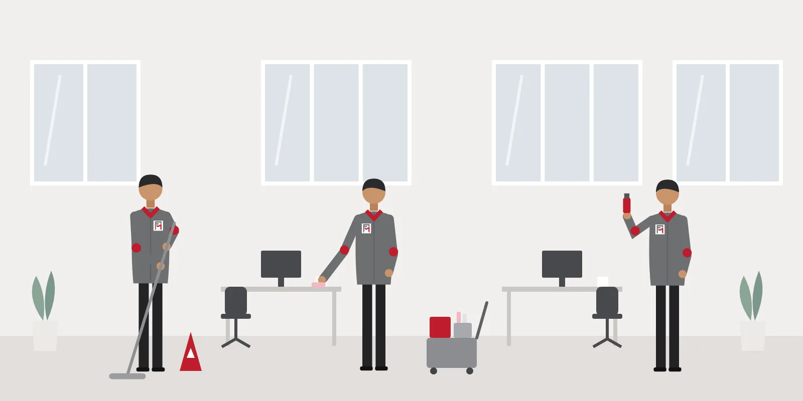
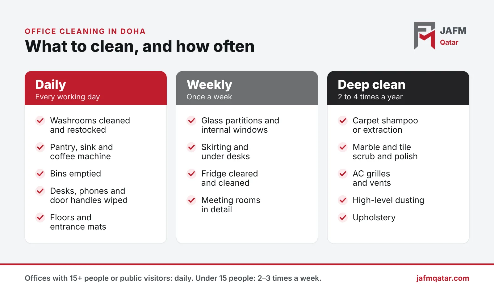

Guide · Office cleaning
Office cleaning in Doha: daily or weekly?

Most offices in Doha with more than 15 people need daily cleaning of washrooms, pantries and bins, with desks and floors cleaned daily or every other day. Weekly-only cleaning suits very small offices with few visitors. Every office benefits from a deep clean two to four times a year.
Why it matters more in Qatar
Dust is the main reason. Fine sand comes in on shoes and through doors and AC systems, settles on desks and screens within a day, and wears down carpets and marble. Offices also keep doors closed and AC running, so the same air and surfaces are shared by everyone all day.
How often, by office type
| Office | Washrooms and pantry | Desks, floors, bins | Deep clean |
|---|---|---|---|
| Small office, under 15 people, few visitors | 2–3 times a week | Weekly | Twice a year |
| Mid-size office, 15–50 people | Daily | Daily | 3–4 times a year |
| Large office or headquarters | Daily, with a day-time cleaner | Daily | Quarterly |
| Government office, bank or clinic with public visitors | Several times a day | Daily | Quarterly |
If your office has a reception that clients visit, plan for daily cleaning regardless of size. Visitors notice washrooms and entrances first.

What daily cleaning should cover
- Washrooms cleaned and restocked (soap, paper, sanitiser)
- Pantry, sink, fridge handles and coffee machine wiped
- Bins emptied and liners replaced
- Desks, phones and door handles wiped
- Floors vacuumed or mopped, entrance mats cleaned
What weekly cleaning adds
- Glass partitions and internal windows
- Skirting, chair legs and under desks
- Fridge cleared out and cleaned
- Meeting room chairs and tables in detail
What a deep clean adds
- Carpet shampooing or extraction
- Marble or tile floor scrubbing and polishing
- AC grilles and vents
- High-level dusting (light fittings, tops of cabinets)
- Upholstery cleaning
Day-time cleaner, or after hours?
After-hours cleaning keeps the office quiet during work. A day-time cleaner (or office assistant) keeps washrooms and pantries fresh through the day and handles spills and meeting rooms. Most mid-size and large offices in Doha use both: a main clean after hours and one person on site during the day.
Frequently asked questions
How many cleaners does an office need?
It depends on the size and layout of the office, the floor types, the number of washrooms and pantries, how many people use the space and how often each area needs cleaning. We visit the office, measure the areas and recommend the right team size in a written quote.
Is daily cleaning much more expensive than weekly?
It costs more, but a daily schedule usually means shorter visits, and it reduces deep-clean and carpet costs because dirt never builds up.
Get a cleaning plan for your office
JAFM Qatar provides daily, weekly and deep office cleaning across Doha, and can add day-time office assistants. See office cleaning in Doha or request a free site visit.